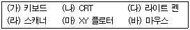
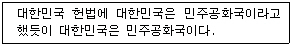
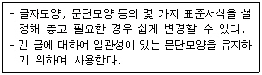
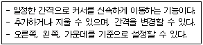
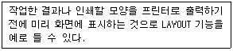
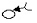
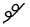
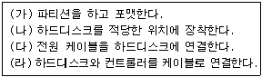

워드프로세서-2급(폐지) (2007-03-04 기출문제)
1과목: 워드프로세서 용어 및 기능
1. 다음 중 보기의 장치들을 입력장치와 출력장치로 올바르게 분류한 것은?

- 입력장치 : (가), (다), (라), (바) : 출력장치 : (나), (마)
- 입력장치 : (가), (나), (다) : 출력장치 : (라), (마), (바)
- 입력장치 : (가), (라), (바) : 출력장치 : (나), (다), (마)
- 입력장치 : (가), (나), (바) : 출력장치 : (다), (라), (마)
(정답률: 79%)

2. 다음 중 문서의 인쇄에 관한 설명으로 옳지 않은 것은?
- 문서의 특정 쪽을 지정하여 인쇄할 수 있다.
- 여러 개의 프린터가 설치된 경우 특정 프린터를 선택하여 인쇄할 수 있다.
- 인쇄시에 문단의 정렬 방식을 설정할 수 있다.
- 인쇄 부수를 지정하여 한 번의 명령으로 동일한 문서를 여러 번 인쇄할 수 있다.
(정답률: 74%)
3. 다음 중 보기의 문장에서 커서를 ‘프’ 바로 다음에 두고 마우스를 더블클릭하면 어떻게 되는가?
- 아무변화가 없다.
- ‘프’가 블록으로 지정된다.
- 해당 문단이 블록으로 지정된다.
- ‘프로그램은’이 블록으로 지정된다.
(정답률: 79%)
4. 다음 보기에서와 같이 자주 나오는 ‘대한민국’이란 단어를 빠르게 입력하기 위해 사용하는 기능으로 가장 적절한 것은?

- 스타일
- 상용구
- 글자겹침
- 메일머지
(정답률: 84%)
5. 다음 중 커서 및 화면의 이동에 대한 설명으로 옳지 않은 것은?
- [↑], [↓] 키를 이용하면 한 줄 단위로 커서가 이동하게 된다.
- 마우스로 스크롤바를 이동하여 커서를 움직일 수 있다.
- [Page Up], [Page Down] 키를 이용하면 한 페이지 또는 화면 단위로 커서가 이동하게 된다.
- 휠마우스의 휠을 사용하여 화면을 이동할 수 있다.
(정답률: 69%)
6. 다음 중 저장하기(Save) 명령이 실행될 때의 가장 적절한 의미는?
- 보조기억장치에 있는 내용을 주기억장치에 저장한다.
- 주기억장치에 있는 내용을 보조기억장치에 저장한다.
- 중앙처리장치에 있는 내용이 주기억장치에 저장된다.
- 중앙처리장치에 있는 내용이 보조 기억장치에 저장된다.
(정답률: 76%)
7. 다음 보기의 내용은 편집기능 중 무엇에 대한 설명인가?

- 스타일(Style)
- 병합(Merge)
- 상용구(Glossary)
- 템플릿(Template)
(정답률: 88%)
8. 다음 중 문단의 특성에 대한 설명으로 옳지 않은 것은?
- 문단은 보통 강제 개행(Hardware Return)을 통하여 구분한다.
- 문단의 시작부분에 대해서 들여쓰기나 내어쓰기를 할 수 있다.
- 한 문단이 두 페이지에 걸치는 경우, 문단 전체를 다음 페이지로 넘기는 기능을 워드랩(Word Wrap)이라고 한다.
- 문단을 기준으로 정렬 방식이나 줄간격을 다르게 설정할 수 있으며, 문단과 문단 사이에 간격을 지정할 수 있다.
(정답률: 66%)
9. 다음 중 텍스트 파일에 대한 설명으로 옳은 것은?
- 텍스트 파일 형식으로 저장하면 모든 워드프로세서 프로그램에서 읽을 수 있다.
- 텍스트 파일 형식으로 저장하면 글꼴은 그대로 보존된다.
- 텍스트 파일의 확장자는 RTF이다.
- 텍스트 파일은 모든 워드프로세서 프로그램에서 읽을 수 있는 서식 있는 문자열 형식 파일이다.
(정답률: 40%)
10. 다음 중 워드프로세서에서 작성한 문서를 스프레드시트에서 부를 수 있는 파일 형식으로 저장하고자 할 때 가장 알맞은 것은?
- 비트맵 형식(*.BMP)
- 한글 2002 문서 형식(*.HWP)
- RTF 형식(*.RTF)
- 텍스트 형식(*.TXT)
(정답률: 64%)
11. 다음 중 워드프로세서의 글자모양에 대한 설명으로 옳지 않은 것은?
- 글자 크기의 단위는 ‘포인트(Point)’이다.
- 자간이란 글자와 글자 사이의 간격을 말한다.
- 글자 속성이란 글자에 적용된 진하게, 글자색, 밑줄, 그림자 등을 말한다.
- 장평이란 문단과 문단 사이의 간격을 말한다.
(정답률: 76%)
12. 다음 중 강제 개행(Hardware Return)과 관련이 없는 것은?
- [Enter] 키
- 새로운 문단을 시작하고자 할 때 사용한다.
- 복수의 영역을 지정할 때도 사용한다.
- 문단부호가 생긴다.
(정답률: 76%)
13. 다음 보기의 내용은 어떤 기능에 대한 설명인가?

- 단(다단) 기능
- 래그드(Ragged)
- 탭 기능
- 치환 기능
(정답률: 81%)
14. 다음 중 워드프로세서의 편집 기능과 관련이 없는 것은?
- 검색(Search)
- 스풀(Spool)
- 스타일(Style)
- 워드 랩(Word Wrap)
(정답률: 66%)
15. 다음 보기의 설명과 관계 깊은 용어는 무엇인가?

- 하드 카피(Hard Copy)
- 소프트 카피(Soft Copy)
- 마진(Margin)
- 폼 피드(Form Feed)
(정답률: 60%)
16. 다음 중에서 줄(행) 단위의 이동이 발생하지 않는 교정부호는?

(정답률: 85%)
17. 다음 교정부호 중 위로 올라간 글자를 아래로 끌어내리는 기능의 부호는?

(정답률: 87%)
18. 관인을 찍을 때의 위치는 그 기관 또는 직위 명칭의 끝자가 인영에 어느 위치에 오도록 찍어야 하는가?
- 좌측
- 중앙
- 우측
- 어느 위치에 찍어도 상관없다.
(정답률: 82%)
19. 다음 중 공문서 작성의 일반사항과 거리가 먼 것은?
- 문서는 쉽고 간명하게 한글로 작성하되 특별한 사유가 있는 경우를 제외하고는 한글맞춤법에 따라 가로로 쓴다.
- 문서에 쓰는 숫자는 특별한 사유가 있는 경우를 제외하고는 아라비아 숫자로 쓴다.
- 문서의 작성에 쓰이는 용지의 크기는 특별한 사유가 있는 경우를 제외하고는 가로 210mm, 세로 297mm로 한다.
- 시간의 표기에서 시, 분의 표기는 12시각제에 따라 숫자로 표기하되 시, 분의 글자는 생략하고 그 사이에 쌍점(:)을 찍어 구분한다.
(정답률: 66%)
20. 다음 중에서 전자문서의 효력 발생 시기는 언제인가?
- 출력후 등기로 수신자에게 도달되었을 때
- 수신자의 컴퓨터 파일에 기록되었을 때
- 발신자가 발송을 하였을 때
- 전자이미지 서명을 하였을 때
(정답률: 72%)
2과목: PC 운영 체제
21. 한글 Windows XP의 [작업 표시줄 및 시작 메뉴 속성] 창에서 시작 메뉴에 [내 최근 문서] 메뉴 항목을 포함하도록 설정할 수 있는데, [내 최근 문서] 메뉴 항목에 관한 설명으로 옳지 않은 것은?
- 최근에 작업한 문서들이 표시된다.
- 해당 문서를 클릭하면 자동으로 문서와 연결되어 있는 프로그램이 실행된다.
- [작업 표시줄 및 시작 메뉴 속성] 창에서 최근 문서의 목록을 지울 수 있다.
- 문서 파일을 삭제하면 최근 문서의 목록에서 자동으로 지워진다.
(정답률: 62%)
22. 다음 중 한글 Windows XP의 폴더에 대한 설명으로 옳지 않은 것은?
- MS-DOS에서 Directory와 같은 의미이다.
- 사용자가 만들 수 있다.
- 폴더의 이름에 ￦, :, ? 등의 문자를 사용할 수 없다.
- 폴더의 이름은 띄어쓰기를 할 수 없다.
(정답률: 70%)
23. 한글 Windows XP의 [탐색기] 창에서 마우스를 이용하여 파일이나 폴더를 선택하거나 복사, 이동하려고 할 때의 설명으로 옳지 않은 것은?
- 같은 드라이브 내에서 파일의 이동은 파일 선택 후에, 원하는 폴더로 드래그 앤 드롭한다.
- 같은 드라이브 내에서 파일의 복사는 파일 선택 후에, [Ctrl] 키를 누르고 원하는 위치로 드래그 앤 드롭한다.
- 비연속적으로 떨어져 있는 여러 개의 파일을 선택할 때는 [Shift] 키를 누른 후 원하는 파일을 클릭한다.
- 마우스를 이용하여 드래그하여 사각형 박스 내의 파일을 선택할 수 있다.
(정답률: 66%)
24. 한글 Windows XP에 설치된 하드디스크의 등록정보 창에서 할 수 없는 작업은?
- 디스크 정리
- 디스크 포맷
- 디스크 오류 검사
- 디스크 조각 모음
(정답률: 55%)
25. 다음 중 한글 Windows XP에서 웹 페이지용 HTML 문서를 편집할 경우에 사용하는 가장 적절한 응용 프로그램은?
- [그림판]
- [탐색기]
- [메모장]
- [Windows Media Player]
(정답률: 72%)
26. 한글 Windows XP의 [시스템 종료] 대화상자에서 Windows 세션을 빠르게 다시 시작하도록 컴퓨터를 절전 상태로 전환하기 위하여 선택하는 항목은?
- 대기 모드
- 로그오프
- 다시 시작
- 사용자 전환
(정답률: 70%)
27. 한글 Windows XP의 [시작] 메뉴에 있는 [검색]을 이용하여 파일 및 폴더를 검색할 경우에 검색 조건으로 옳지 않은 것은?
- 검색하고자 하는 파일 이름을 검색 조건으로 지정할 수 있다.
- 파일의 수정한 날짜에 대한 기간을 검색 조건으로 지정할 수 있다.
- 검색하고자 하는 파일의 크기를 검색 조건으로 지정할 수 있다.
- 검색하고자 하는 파일의 특성(읽기 전용, 숨김)을 검색 조건으로 지정할 수 있다.
(정답률: 55%)
28. 한글 Windows XP에서 사용하는 [Windows 탐색기] 프로그램의 파일이 있는 실제 위치는?
- C:\Windows\Explorer.exe
- C:\Program Files\Explorer.exe
- C:\Windows\시작메뉴\Explorer.exe
- C:\Windows\시작메뉴\Iexplorer.exe
(정답률: 55%)
29. 다음 중 한글 Windows XP에서 모뎀 또는 널 모뎀 케이블을 사용하여 다른 컴퓨터, 인터넷 텔넷 사이트, 게시판 서비스, 온라인 서비스 및 호스트 컴퓨터에 연결할 수 있는 네트워크 프로그램은?
- 파일 및 설정 전송 마법사
- 하이퍼터미널
- 매체 재생기
- 원격 데스크톱 연결
(정답률: 75%)
30. 다음 중 한글 Windows XP에서 사용 가능한 파일 이름에 대한 설명으로 옳지 않은 것은?
- 파일의 확장자를 3문자로 제한한다.
- 파일 이름을 255Byte까지 사용할 수 있다.
- ￦ / : * ? “ < > ｜ 등의 문자는 파일 이름에 사용할 수 없다.
- 여러 개의 “ . ” 문자를 사용할 경우 맨 마지막 점 오른쪽의 단어를 확장자로 사용한다.
(정답률: 65%)
31. 한글 Windows XP에서 새로운 프린터의 설치에 관한 설명으로 옳지 않은 것은?
- [프린터 및 팩스] 창에서 [파일] 메뉴에 있는 [프린터 추가]를 실행하면 [프린터 추가 마법사]가 수행된다.
- 새로운 프린터를 설치하는 과정에서 제조업체와 프린터 모델명을 지정해 주어야 한다.
- 새로운 프린터를 설치하는 과정에서 프린터 포트를 지정해 주어야 한다.
- 새로이 설치한 프린터는 기본 프린터로 자동적으로 지정된다.
(정답률: 65%)
32. 한글 Windows XP에서 디스크 공간이 부족할 경우에 문제를 해결하는 방법으로 옳지 않은 것은?
- [휴지통]을 비운다.
- 디스크 드라이브를 압축한다.
- 사용하지 않는 Windows 구성요소를 삭제한다.
- 불필요한 프로그램을 종료한다.
(정답률: 59%)
33. 한글 Windows XP에서 사용하는 폴더와 관련된 설명으로 옳지 않은 것은?
- 하위 폴더를 만들려면 원하는 위치에서 바로 가기 메뉴의 [새로 만들기]에서 [폴더]를 선택한다.
- 폴더는 읽기 전용과 숨김의 특성을 갖는다.
- 폴더 창에서 하위 폴더를 만들려면 주메뉴 [파일]의 [새로 만들기]에서 [폴더]를 선택한다.
- 폴더 창에 있는 하위 폴더 아이콘 위에서 마우스의 오른쪽 버튼을 더블클릭하면 복사할 수 있다.
(정답률: 64%)
34. 한글 Windows XP에서 제공되는 [도움말 및 지원] 기능과 관련된 설명으로 옳지 않은 것은?
- 검색된 도움말을 파일로 저장하는 기능이 있다.
- 검색된 도움말 내용을 인쇄하는 기능이 있다.
- 색인 항목의 목록을 이용한 색인 기능이 있다.
- 검색어 입력을 통한 검색 기능이 있다.
(정답률: 46%)
35. 한글 Windows XP의 [시스템 등록정보] 창에서 이미 설치되어 있는 하드웨어 정보를 보고자 할 때 가장 적절한 방법은?
- [일반] 탭에서 [지원 정보] 항목을 선택한다.
- [하드웨어] 탭에서 [장치 관리자] 항목을 선택한다.
- [고급] 탭에서 [환경 변수] 항목을 선택한다.
- [시스템 복원] 탭에서 [설정] 항목을 선택한다.
(정답률: 66%)
36. 한글 Windows XP에서 인터넷 사용을 위하여 수동으로 TCP/IP 등록정보를 설정할 경우에 필수 설정 항목이 아닌 것은?
- IP 주소
- DNS 서버
- 기본 게이트웨이
- WINS 구성
(정답률: 62%)
37. 한글 Windows XP [보조 프로그램]에 있는 [그림판] 프로그램에서 [이미지] 메뉴에서 할 수 있는 작업이 아닌 것은?
- 대칭 이동/회전
- 늘리기/기울이기
- 색 반전
- 레이어
(정답률: 76%)
38. 다음 중 한글 Windows XP에서 키보드의 숫자 키 패드로 마우스 포인터를 움직이는 기능은 무엇인가?
- 필터키
- 고정키
- 토글키
- 마우스키
(정답률: 69%)
39. 한글 Windows XP에서 바로 가기 키 사용에 관한 설명으로 옳은 것은?
- [F8] 키 : 프로그램의 실행
- [Ctrl] + [F4] : 프로그램의 종료
- [shift] + [F10] : 선택한 항목의 바로 가기 메뉴 표시
- [Alt] + [F4] : 현재 창의 시스템 메뉴 표시
(정답률: 66%)
40. 한글 Windows XP에서 [제어판]-[키보드]의 등록정보 창에 관한 설명으로 옳지 않은 것은?
- 커서 모양을 변경할 수 있다.
- 문자 반복에 의한 재입력 시간을 조절할 수 있다.
- 문자 반복에 의한 반복 속도를 조절할 수 있다.
- 커서 깜박임 속도를 조절할 수 있다.
(정답률: 67%)
3과목: PC 기본 상식
41. 다음 중 멀티미디어 파일 형식에 대한 설명으로 옳지 않은 것은?
- JPEG는 동영상에 관한 멀티미디어 기술로써 주문형 비디오 서비스 등에 이용된다.
- GIF를 통해 움직이는 애니메이션 기능을 사용할 수 있다.
- 하이퍼텍스트는 링크 기능을 통해 원하는 정보로의 이동이 가능하도록 해주는 기능이다.
- MIDI를 통해 컴퓨터 음악 파일을 만들 수 있다.
(정답률: 59%)
42. 사용자가 어떤 일의 처리를 컴퓨터에 의뢰하고 나서 그 결과를 얻을 때까지 소요되는 시간을 무엇이라 하는가?
- 자료처리 시간(Data Processing Time)
- 유휴 시간(Idle Time)
- 반응 시간(Response Time)
- 턴 어라운드 타임(Turn Around Time)
(정답률: 66%)
43. CPU와 주기억장치의 속도 차이로 인한 성능 저하를 방지하기 위해 사용하는 고속의 기억장치는?
- DDR SDRAM
- 연상기억장치
- 가상기억장치
- 캐시기억장치
(정답률: 79%)
44. 다음 중 시간적 간격 없이 양방향 통신이 가능한 통신 방식은 어느 것인가?
- 반이중(Half-Duplex) 방식
- 심플렉스(Simplex) 방식
- 전이중(Full-Duplex) 방식
- 더블 심플렉스(Double Simplex) 방식
(정답률: 77%)
45. 다음 중 한 유형의 미디어를 클릭하여 동일 유형 또는 다른 유형의 미디어로 이동하는 기술을 무엇이라고 하는가?
- 멀티미디어
- 미디(MIDI)
- 스트리밍(Streaming)
- 하이퍼미디어
(정답률: 61%)
46. 다음 중 다중 프로그램을 지원하지 않는 운영체제는?
- Windows ME
- Linux
- DOS
- OS/2
(정답률: 54%)
47. 다음 중 디지털 신호를 아날로그 신호로 변조하고, 보내온 아날로그 신호를 디지털 신호로 복조하는 기기는?
- 모뎀
- 라우터
- 게이트웨이
- 광케이블
(정답률: 68%)
48. “해킹(Hacking) 수법의 일종으로 네트워크 주변을 지나다니는 패킷(Packet)을 엿보면서 사용자 계정이나 비밀번호, 주민등록번호 등을 몰래 알아내는 행위”를 무엇이라고 하는가?
- 스푸핑(Spoofing)
- 스니핑(Sniffing)
- Dos(Denial of Service)
- 백 도어(Back Door)
(정답률: 73%)
49. 다음 중 네트워크 내부에 있는 시스템을 외부의 불법적인 침입으로부터 보호하기 위하여 사용하는 것은?
- Firewall
- Trap Door
- Back Door
- TELNET
(정답률: 70%)
50. 컴퓨터 주기억장치의 특징과 거리가 먼 것은?
- 반복해서 읽어도 내용은 변하지 않는다.
- 다른 데이터를 기억시키면 그 장소의 이전 내용은 지워진다.
- 데이터를 다른 장소로 옮기면 원래의 내용은 변화된다.
- 처리될 데이터나 프로그램을 기억 장소에 기억한다.
(정답률: 58%)
51. 다음 중 멀티미디어 데이터의 저장장치로서 가장 적합하지 않은 것은?
- DVD-ROM
- Magnetic Tape
- CD-ROM
- Optical Disk
(정답률: 52%)
52. 다음 중 통신망에 대한 설명으로 거리가 먼 것은?
- LAN : 근거리 통신망
- WAN : 광대역 통신망
- VAN : 도시권 통신망
- B-ISDN : 광대역 종합정보통신망
(정답률: 62%)
53. 다음 중 취급 데이터 유형에 따른 컴퓨터의 분류가 아닌 것은?
- 디지털컴퓨터
- 아날로그컴퓨터
- 마이크로컴퓨터
- 하이브리드컴퓨터
(정답률: 64%)
54. 다음 중 DRAM과 SRAM에 대한 설명으로 옳지 않은 것은?
- SRAM은 DRAM보다 가격이 비싸다.
- DRAM은 SRAM보다 집적도가 높다.
- SRAM은 DRAM보다 속도가 빠르다.
- SRAM은 재충전 회로가 있어 재충전(Refresh)을 해 주어야 한다.
(정답률: 66%)
55. 다음 중 디지털 컴퓨터에 대한 설명으로 옳지 않은 것은?
- 속도, 전류 등 연속적인 데이터를 처리하는 컴퓨터이다.
- 산술 및 논리 연산을 처리하는 회로에 기반을 둔 컴퓨터이다.
- 문자나 숫자화 된 데이터를 처리하는 컴퓨터이다.
- 명령어들로 구성된 프로그램에 의해 동작한다.
(정답률: 48%)
56. 다음 중 바이오스(BIOS)의 역할과 거리가 먼 것은?
- POST
- 시스템 초기화
- 디스크 조각 모음
- 디스크 부트
(정답률: 56%)
57. 다음은 하드디스크를 설치하는 순서이다. 순서를 올바르게 나열한 것은?

- (나), (라), (다), (가)
- (라), (가), (나), (다)
- (가), (나), (다), (라)
- (다), (나), (가), (라)
(정답률: 69%)
58. 다음 중 LAN에 대한 설명으로 옳지 않은 것은?
- LAN은 비교적 좁은 지역에서의 네트워크 구성을 의미한다.
- LAN은 국가 간 네트워크에 적합하다.
- LAN은 전송거리가 짧고 에러 율이 낮은 특징이 있다.
- LAN은 저가의 고속 네트워킹이 가능하다.
(정답률: 75%)
59. 다음 중 운영체제에 대한 설명으로 옳지 않은 것은?
- 사용자와 컴퓨터간의 인터페이스 기능을 제공한다.
- 프로세서나 메모리 같은 자원의 사용을 관리한다.
- 운영체제에서 가장 기초적인 기능을 제공하는 부분을 커널이라고 한다.
- 운영체제의 종류로는 액세스, 파워포인트, 엑셀 등이 있다.
(정답률: 55%)
60. 다음 중 멀티미디어에 대한 설명으로 옳지 않은 것은?
- 텍스트, 그래픽, 이미지, 오디오, 비디오, 애니메이션 등을 포함한다.
- 정보의 양이 많으므로 압축 기술을 필요로 한다.
- 고성능의 하드웨어와 빠른 통신망이 요구된다.
- 멀티미디어의 성장과 함께 PC에서 플로피디스크의 사용이 증대되었다.
(정답률: 57%)
나) 프린터 : 출력장치
다) 마우스 : 입력장치
라) 스피커 : 출력장치
마) 모니터 : 출력장치
바) 마이크 : 입력장치
입력장치는 사용자가 컴퓨터에게 정보를 입력하는 장치이고, 출력장치는 컴퓨터가 처리한 정보를 사용자에게 보여주거나 들려주는 장치입니다. 따라서, 키보드, 마우스, 마이크는 정보를 입력하는 장치이므로 입력장치에 해당하고, 프린터, 스피커, 모니터는 정보를 출력하는 장치이므로 출력장치에 해당합니다.